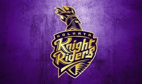

IPL:2018
Hosts Mumbai, who have laid their hands on the coveted crown thrice (2013, 2015, 2017) will be led by India opener Rohit Sharma who is the most successful captain in the cash-rich T20 league having led Mumbai to a treble of titles.
Both Royals and Daredevils were outplayed in their opening games and will be itching to bounce back.© BCCI
Rajasthan Royals will need to regroup quickly after a heavy loss when they face Delhi Daredevils in what will be their first...

Royal Challengers Bangalore have time and again tripped over the final hurdle in IPL finals.
One of the most celebrated teams and definitely a fan-favourite of the Indian Premier League (IPL), Royal Challengers Bangalore till now have not been able ...
Chennai Super Kings will aim to dominate Kolkata Knight Riders in the presence of die-hard fans when they play their first IPL home game in two years.Chennai Super Kings will aim to dominate Kolkata Knight Riders in the presence of die-hard fans when they play their first IPL home game in two years...

Shikhar Dhawan was dropped in the first over by captain Ajinkya Rahane and that blunder cost the visiting side dear in the end.Opening batsman Shikhar Dhawan capitalised on a reprieve when on nought as he smashed his way to an unbeaten 77 to help Sunrisers Hyderabad...

Delhi Daredevils will be keen to ensure that Gautam Gambhir's return to his home city results in Indian Premier League success.
Delhi Daredevils (DD) will welcome back local hero Gautam Gambhir to their team in the 11th edition..

Kolkata Knight Riders (KKR) rode on Nitish Rana's all-round show and Sunil Narine's whirlwind 19-ball 50 to beat Royal Challengers Bangalore (RCB) by four wickets in the Indian Premier League (IPL) clash on Sunday....
Chasing a modest target 167, Rahul slammed 50 of just 14 balls.
Opener KL Rahul blasted his way to a fastest ever half-century in Indian Premier League as a new look Kings XI Punjab...